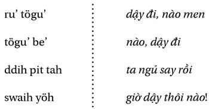

Chương 15
Không thể sống nếu không thất bại. Nếu quá cẩn thận sợ mắc sai lầm, bạn đã thất bại ngay từ đầu.
- J. K. Rowling
THẤT BẠI LÀ MẸ THÀNH CÔNG
Vào năm 2007, ngay khi bán công ty của mình lần thứ hai, tôi bắt tay vào xây dựng diễn đàn khởi nghiệp “thực sự”. Ở đó, tôi chỉ dành cho các ý tưởng đột phá sáng tạo trong kinh doanh chứ không phải dành cho bán hàng đa cấp, hay bán quần áo trên Facebook.
Từ đó, trong bảy năm kế tiếp, tôi dành thời gian để xây dựng diễn đàn này. Trong khoảng thời gian đó, tôi chứng kiến hàng triệu người muốn làm doanh nhân. Đa số chỉ có khát vọng nhất thời và vài ngày sau lại quay trở lại với cuộc sống thoải mái bình thường. Cũng có một số người tham gia rất lâu và có vẻ như làm những gì mình nói.
Nhưng rốt cuộc họ chẳng làm gì cả.
Họ hiểu, tin tưởng nhưng không thực sự hành động. Họ dành hàng giờ đọc hết sách này đến sách khác, rồi phân tích, rồi viết những bài truyền cảm hứng nhưng chẳng đi đến đâu.
Và rồi có một số người can đảm dám hành động và viết ra những thất bại của họ. Đó là món quà quý giá cho cộng đồng các thành viên trên diễn đàn: họ học được nhiều hơn từ các thất bại. Bởi vì tôi tương tác hàng ngày với hàng ngàn doanh nhân, tôi biết suy nghĩ của họ và quan trọng hơn là cả những gì họ không nghĩ.
Điều này quan trọng để thành công: học về thành công chẳng có ích gì, muốn thành công chúng ta phải học từ thất bại . Dù sao thì đa số vẫn cảm thấy mất phương hướng. Nên bắt đầu từ đâu? Nên làm gì? Nên học gì? Làm sao để tìm ý tưởng kinh doanh?
Vì thế, tôi tự thử thách bản thân: nếu tôi có thể tạo ra một hệ thống cách nghĩ và hành động để định hướng cho các doanh nhân này, để giúp họ có được lợi thế nhất định để thành công, tự do và khởi nghiệp, hệ thống đó sẽ như thế nào?
Sau nhiều năm, tôi tìm ra năm yếu tố căn bản của mô hình này, tạo thành mô hình khởi nghiệp UNSCRIPTED – không theo kịch bản.
MÔ HÌNH KHỞI NGHIỆP UNSCRIPTED
Đó là hệ thống cách nghĩ và hành động gồm năm thành phần, bao gồm cả các quá trình rèn luyện tự phát triển bản thân và khởi nghiệp.
Bởi vì kinh doanh là cạnh tranh, cho nên mô hình này sẽ cho bạn lợi thế cạnh tranh với những ai không biết đến nó. Năm thành phần trong mô hình này đóng vai trò quan trọng không thể thiếu – nó giúp gia tăng tỷ lệ thành công và cùng lúc giảm thiểu rủi ro thất bại. Mô hình này chứa đựng các bài học rút ra trong hơn hai mươi lăm năm nghiên cứu hàng ngàn doanh nhân thành công, thất bại và cả của chính tôi. Nếu các doanh nhân thành công có điểm chung nào, thì đó chính là mô hình này. Rất nhiều nguyên tắc, bài học thành công trong mô hình này đều không được truyền thông để ý đến.
Ví dụ như trường hợp của doanh nhân Kevin Nguyen. Anh khởi nghiệp thành công với công ty thương mại điện tử. Có ngày anh làm việc ba tiếng, đôi khi mười tiếng, và đôi khi không làm gì. Kevin đã đạt được cuộc sống tự do theo ý mình. Anh có thể lựa chọn làm việc hay du lịch tùy thích. Bạn chắc chưa bao giờ nghe đến anh ta.
Và kế đến là trường hợp của Steven VanCauwenbergh. Anh có ước mơ đổi đời và bỏ học đại học để khởi nghiệp. Mất nhiều năm thất bại, bây giờ anh đã là triệu phú. Và cả câu chuyện của Dave Happe, Al Levi, Kurt Searvogel cũng thế.
Đây chỉ là một vài ví dụ mà chắc bạn ít khi nào nghe thấy. Họ đều có điểm chung: họ sống cuộc sống tự do theo ý mình thay vì làm diễn viên cho Kịch Bản Cuộc Đời.
CHI TIẾT MÔ HÌNH KHỞI NGHIỆP UNSCRIPTED
Theo như nhà tâm lý học Abraham Maslow, con người nên theo đuổi mục đích là hành trình tự nhận thức bản thân. Wikipedia định nghĩa “tự nhận thức là biểu lộ tính sáng tạo, khai sáng tinh thần, mở rộng kiến thức để cống hiến cho xã hội”. Mô hình khởi nghiệp UNSCRIPTED sẽ giúp bạn khai mở sứ mệnh cuộc đời bạn, mang đến tự do, lựa chọn và các phương tiện vật chất để thực hiện mà không cần phải chịu đựng sự dồn nén từ Kịch Bản Cuộc Đời.
Đó có thể là bất cứ điều gì bạn muốn làm. Đối với tôi, đó là viết sách. Với bạn, có thể là làm chính trị gia, từ thiện, hay tiếp tục kinh doanh. Mô hình UNSCRIPTED được mô tả bằng sơ đồ sau:

Bắt nguồn từ sự kiện đổi đời (FTE) và các quá trình thực thi. Từ dưới lên trên là các yếu tố căn bản cốt yếu tạo thành mô hình này. Thứ nhất là ba yếu tố tinh thần (3B) quan trọng gồm có niềm tin, thiên kiến và những thứ vớ vẩn cần phải xem xét thay đổi để hóa giải Kịch Bản Cuộc Đời. Kế đến là mục đích và ý nghĩa (MP), chiến lược khởi nghiệp (FE) và chiến lược thực thi (KE). Ngay phía trên là bốn kỷ luật đúng đắn (4D). Và cuối cùng là cuộc sống tự do – hành trình tự nhận thức.
Có thể khái quát theo từng bước như sau:
“TẠI SAO MÌNH KHÔNG SỐNG NHƯ THẾ NÀY HAI MƯƠI NĂM TRƯỚC?”
Cho dù mô hình này được diễn tả như thế nào, cuộc sống tự do theo ý bạn muốn xảy ra khi các thành phần trong mô hình này được khai mở và hướng bạn đến hành trình tự nhận thức. Đó chính là điểm tạo ra thay đổi cho cuộc đời bạn. Đó là khi buổi tối Chủ nhật không còn ám ảnh làm bạn lo sợ. Đó là khi bạn thức giấc với thu nhập thụ động đủ để trang trải cho cuộc sống bạn muốn. Đó là khi bạn chợt nhận ra “Tại sao mình không sống như thế này hai mươi năm trước?”.
Tôi còn nhớ rõ khoảnh khắc đó như mới xảy ra ngày hôm qua. Khi đó, tôi chỉ mới hai mươi bảy tuổi và đó là ngày hạnh phúc nhất cuộc đời tôi. Lúc đó, tôi sống trong căn nhà thuê tồi tàn nhưng công việc kinh doanh thì đang tiến triển rất tốt. Tôi tạo ra dịch vụ và đã tìm được cách thu hút khách hàng. Sau khi đến ngân hàng gởi tiền, tôi bước ra ngoài. Đó là một buổi chiều dịu nắng ở Arizona. Tôi ngừng lại và nhìn vào tờ ngân phiếu có giá trị hơn 8 ngàn đô-la. Đó có thể là một số tiền không lớn nhưng khi đó nó có ý nghĩa rất lớn với tôi. Điều đó có nghĩa là tôi có ít nhất một năm tự do làm những gì mình muốn.
Sự thật là cuộc sống tự do bắt đầu không phải khi bạn đã là triệu phú với vài triệu đô-la trong ngân hàng, nhưng đó là ngày mà định hướng của bạn thay đổi – ngày mà bạn không còn sống theo sự chi phối, ảnh hưởng của Kịch Bản Cuộc Đời, ngày mà bạn không còn vật vờ tồn tại mà là thực sự sống với khát vọng đời mình.
THÀNH CÔNG LÀ GÌ?
Cốt lõi của mô hình khởi nghiệp UNSCRIPTED là hai quá trình căn bản để thực thi: quá trình phát triển nhận thức và quá trình biểu lộ giá trị ra bên ngoài. Một cách tổng quát, quá trình là một loạt những hành động có định hướng.
Đầu tiên là quá trình phát triển nhận thức. Nó bao gồm hệ thống cách nghĩ, niềm tin và khả năng để xem xét, đánh giá. Đó là cách thức bạn suy diễn và cảm nhận thế giới xung quanh. Ví dụ, đó là cách bạn nhìn nhận vấn đề tiền bạc và làm sao để có được nó. Đó là cách bạn suy diễn khi thấy một anh bạn trẻ lái siêu xe Ferrari. Đó là cách bạn đánh giá hậu quả và đưa ra lựa chọn.
Điều tệ hại là não bộ của bạn không được cấu tạo cho mục đích này mà đã bị Kịch Bản Cuộc Đời chi phối. Kết quả là chúng ta chỉ là nạn nhân của những niềm tin, cách nghĩ sai lầm được truyền lại từ nhiều đời mà ít khi nào hỏi tại sao.
Thứ hai là quá trình biểu lộ giá trị ra bên ngoài. Đó là những hành động lặp đi lặp lại đã được tinh chỉnh. Chú ý chữ “tinh chỉnh” và “lặp đi lặp lại” vì nó đóng vai trò quan trọng để thành công – thay đổi hành động nhiều lần dẫn đến thay đổi kết quả. Những hành động bất chợt đều không có nhiều ý nghĩa.
Ví dụ, bạn muốn có sáu múi? Hãy thử tập gym một lần xem sao. Một lần sẽ chẳng cho bạn kết quả như bạn muốn. Tuy nhiên, tập liên tục hàng ngày trong một năm sẽ cho bạn kết quả bạn muốn.
Tuy thế, điều cần lưu ý là chiến lược kinh doanh. Có rất nhiều thứ thay đổi liên tục. Điều hiệu quả năm năm trước có thể không còn tác dụng ngày hôm nay.
Hãy để tôi cho bạn một ví dụ.
Sau khi xuất bản cuốn sách đầu tiên, có độc giả phàn nàn vì tôi đã không đưa ra cách làm sao để gia tăng từ một trăm thành viên lên sáu trăm ngàn thành viên? Tôi bỏ qua một số thông tin vì những thông tin đó không còn phù hợp. Nó không còn giá trị. Nó có ích gì khi tôi nói với bạn tôi dùng 4 ngàn đô-la để quảng cáo trên trang tìm kiếm LookSmart? Trang này hiện giờ đã không còn tồn tại. Hồi tôi mua lại công ty, mạng xã hội Facebook chưa có. Mọi thứ thay đổi rất nhanh. Đó là lý do vì sao nhiều sách dạy “cách làm” không hiệu quả và nhanh chóng trở nên lỗi thời.
ĐỪNG TÌM LỐI TẮT
Một trong những điều lừa dối lớn nhất trong lĩnh vực phát triển bản thân là bí quyết có thể né tránh thất bại. Xem thử một vài than phiền của một số độc giả đọc sách của tôi:
Ẩn ý ở đây là gì? Tôi không mang đến bí quyết hay phép màu thần kỳ. Những độc giả này tìm kiếm lối tắt đến thành công mà không phải trả giá, hay đối diện với rủi ro. Bí quyết đó chưa từng có và sẽ không bao giờ có.
Sự thật là đa số những người ráng tìm kiếm bí quyết hay lối tắt sẽ thất bại, không phải họ thiếu cách thức hành động mà thiếu đi quá trình phát triển nhận thức nội tại. Một cách nghĩ sai lầm dẫn đến hành động sai lầm, từ đó không thể tạo ra thay đổi.

Ví dụ, nếu bạn nghĩ tiền bạc là tội lỗi và người khác giàu có là vì họ lừa dối, hành động của bạn sẽ phản ánh điều đó và kết quả là thất bại. Nói cách khác, bản chất con người bạn quyết định thành quả của cuộc đời bạn.
Thay đổi hệ thống cách nghĩ nội tại dẫn đến thay đổi thực sự, từ đó quá trình hành động biểu lộ ra bên ngoài sẽ đi theo. Cả hai quá trình đều quan trọng cho thành công. Thêm vào đó, tôi đã kiểm tra chắc chắn các quá trình đề ra trong cuốn sách này có giá trị bền vững – nó hiệu quả hôm nay và cả trong nhiều năm tới.
Sau sự kiện đổi đời, bước kế tiếp bạn cần làm là xem xét quá trình phát triển nhận thức, tinh chỉnh các niềm tin và các thiên kiến sai lệch. Thay đổi cách nghĩ, thay đổi kết quả.